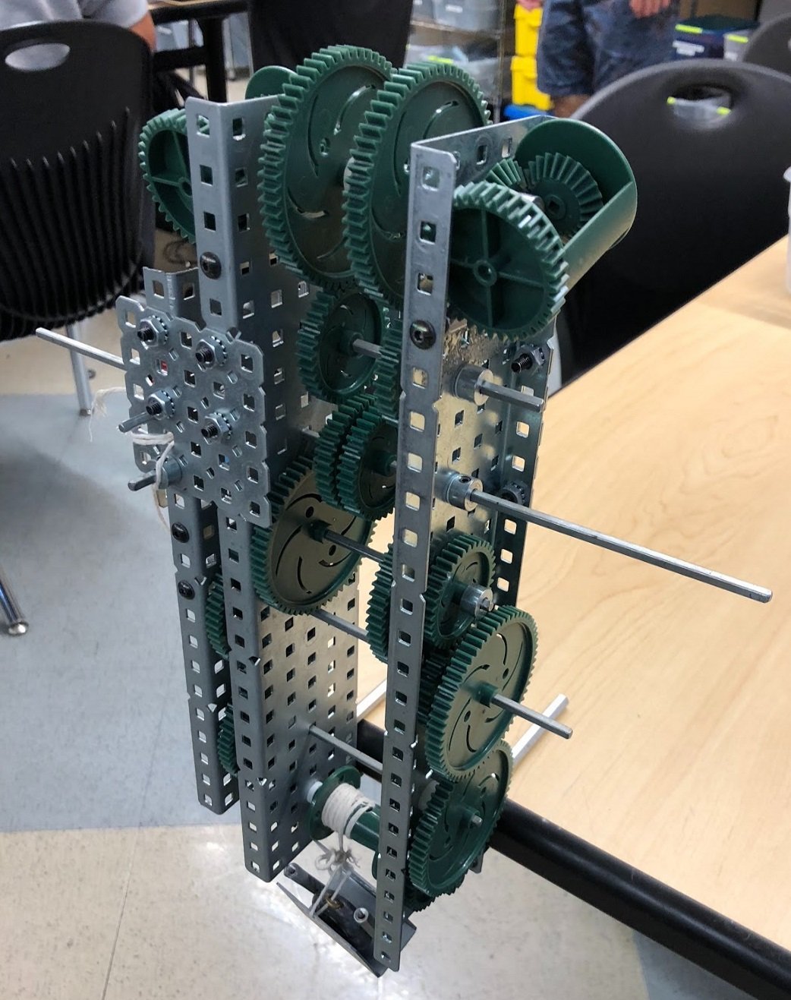

P.1.2.5 Mechanical Winch
P.1.2.5 Project Rubric
October 17, 2018 - October 24, 2018, Principles of Engineering
The objective in this project was to create a functioning winch system that incorporates a drum with a weight attached to a string. My responsibilities were to create a NetLogo simulation program that imitates the behavior of the winch system. I learned about the importance of drum size and how they affected the efficiency of the system. Larger drums have a larger linear velocity than smaller drums, which makes them better for rotating lengths of string around them in a winch system. An important skill that was exemplified with my team was time management. As the project deadline approached, our team was forced to spend more time working on the project in order to finish our deliverables.
P.2.1.4 Aerodynamic Design
P.2.1.4 Project Rubric
January 8, 2019 - January 24, 2019, Principles of Engineering
The objective for this project was to design an aerodynamic rocket that would travel the farthest horizontal distance while being pumped with 70 psi of air pressure. All members of the design team were responsible for creating two separate prototypes of their rockets. While designing, I learned about the importance of features such as a pressure cap to prevent air pressure from damaging the front end of the rockets. The shape of rocket fins was very essential as elliptical-shaped fins seemed to outperform all other types based on vertical and horizontal velocity. In the design process, the team worked well with each other and provided detailed advice to improve our models.